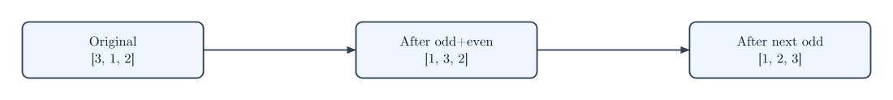
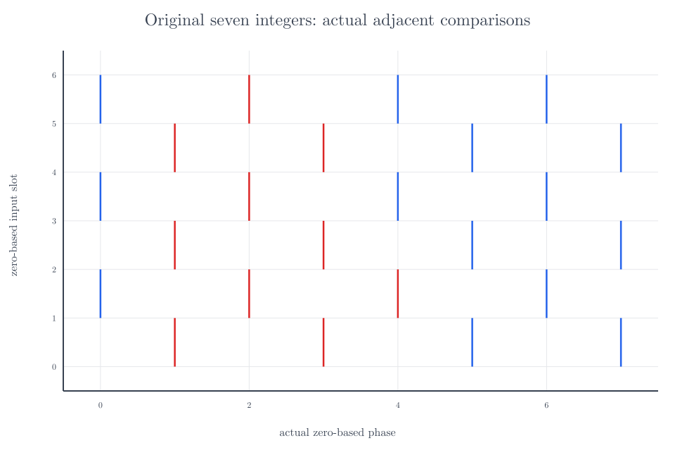
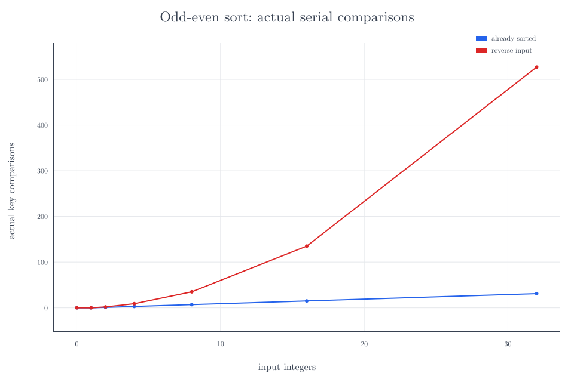
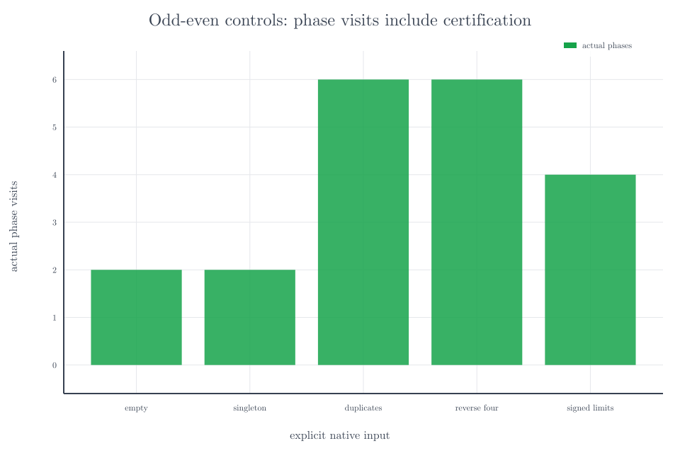

Odd-even sort: actual alternating adjacent exchanges
Abstract
Follow the actual serial brick-sort producer from a tiny input through the original seven integers. Canonical comparison and phase histories distinguish disjoint comparators from parallel execution, and distinguish sorting progress from the extra rounds used to certify termination.
Two independent pair patterns, one serial producer
Odd phases compare left slots1,3,...; even phases compare0,2,... . Each comparison exchanges a strict inversion. Pairs within a phase share no positions, so they could run concurrently, but this implementation executes them serially. Equal keys never exchange, hence their original identities remain ordered.
For a strict adjacent exchange, exactly one inversion disappears:
Inversion count cannot become negative, so only finitely many exchanges occur. A complete odd-plus-even round without swaps tests every adjacent pair without changing the array; every adjacent inequality is then satisfied and the array is sorted. This stopping rule includes its final certification round. The fixed-depth network theorem does not imply that the returned count, including these extra inspections, is at most n phases.
A tiny actual phase history
For[3,1,2], the first odd comparison1<2 leaves the input unchanged; the following even comparison moves1 left. The next odd phase places2 before3. The diagram and table read the actual snapshots and carried identities.
#include <dm/dm.hpp>
int main() {
std::filesystem::create_directories("build");
auto t = dm::algorithms::odd_even_sort_trace({3, 1, 2});
dm::graphics::Diagram d;
d.node("input", {0, 0}, std::format("Original\n{}", t.input));
d.node("even", {7, 0}, std::format("After odd+even\n{}", t.phases[1].values));
d.node("sorted", {14, 0},
std::format("After next odd\n{}", t.phases[2].values));
d.edge("input", "even").edge("even", "sorted");
std::print("| phase | odd left slots | actual values after | actual swaps |\n| ---: | --- | --- | ---: " "|\n");
for (auto &s : t.phases)
std::print("| {} | {} | `{}` | {} |\n", s.ordinal, s.odd, s.values,
s.swaps);
d.save_svg("build/odd_even_tiny.svg");
}| phase | odd left slots | actual values after | actual swaps |
|---|---|---|---|
| 0 | true | [3, 1, 2] | 0 |
| 1 | false | [1, 3, 2] | 1 |
| 2 | true | [1, 2, 3] | 1 |
| 3 | false | [1, 2, 3] | 0 |
| 4 | true | [1, 2, 3] | 0 |
| 5 | false | [1, 2, 3] | 0 |

Preserve the original seven-value example
The old report drew eight wires for three rounds while sorting seven values separately. Here every segment corresponds to an actual comparison of the original[5,3,8,1,9,2,7], at its real phase and positions. Blue means no exchange; red means a strict exchange. Separate completed-phase rows show the resulting arrays. This is the actual adaptive serial execution, not an assertion that the plotted prefix is a universal fixed sorting network.
#include <dm/dm.hpp>
int main() {
std::filesystem::create_directories("build");
auto t =
dm::algorithms::odd_even_sort_trace(dm::algorithms::odd_even_sort_demo_input());
auto p = dm::graphics::RPlot::create();
for (auto &c : t.comparisons)
p.segments({double(c.phase)}, {double(c.left)}, {double(c.phase)},
{double(c.left + 1)},
c.swapped ? dm::graphics::RGB{220, 38, 38}
: dm::graphics::RGB{37, 99, 235}, 2.5);
p.title("Original seven integers: actual adjacent comparisons").x_label(
"actual zero-based phase").y_label("zero-based input slot").x_limits(
-.5, double(t.phases.size()) - .5).y_limits(-.5, 6.5).save_svg(
"build/odd_even_original.svg");
std::print("Original: `{}`. Actual result: `{}`. Actual carried IDs: `{}`.\n\n",
t.input, t.run.output, t.run.original_indices);
std::print("| phase | actual values | actual comparisons | actual exchanges |\n| ---: | --- | ---: | " "---: |\n");
for (auto &s : t.phases)
std::print("| {} | `{}` | {} | {} |\n", s.ordinal, s.values,
s.comparisons, s.swaps);
}Original: [5, 3, 8, 1, 9, 2, 7]. Actual result: [1, 2, 3, 5, 7, 8, 9]. Actual carried IDs: [3, 5, 1, 0, 6, 2, 4].
| phase | actual values | actual comparisons | actual exchanges |
|---|---|---|---|
| 0 | [5, 3, 8, 1, 9, 2, 7] | 3 | 0 |
| 1 | [3, 5, 1, 8, 2, 9, 7] | 3 | 3 |
| 2 | [3, 1, 5, 2, 8, 7, 9] | 3 | 3 |
| 3 | [1, 3, 2, 5, 7, 8, 9] | 3 | 3 |
| 4 | [1, 2, 3, 5, 7, 8, 9] | 3 | 1 |
| 5 | [1, 2, 3, 5, 7, 8, 9] | 3 | 0 |
| 6 | [1, 2, 3, 5, 7, 8, 9] | 3 | 0 |
| 7 | [1, 2, 3, 5, 7, 8, 9] | 3 | 0 |

Serial work and the cost of certification
A complete round performs n−1 comparisons for n≥1. Reverse order has n(n−1)/2 inversions and therefore exactly that many exchanges. Sorted input still executes one full odd/even round, so its work is linear rather than constant. The driver uses O(n²) worst-case serial comparisons; disjoint comparisons offer a possible parallel schedule, not an implemented timing result.
The controlled families below come from the reusable native adjacent-sort fixture. Values labelled “phases” include the final certification round; they are measured operation counts, not CPU time or a claimed speedup over another sort.
#include <dm/dm.hpp>
int main() {
std::filesystem::create_directories("build");
std::vector<double> x, ascending, descending;
std::print("| n | ascending comparisons | reverse comparisons | reverse swaps | actual reverse phases " "|\n| ---: | ---: | ---: | ---: | ---: |\n");
for (std::size_t n : {0, 1, 2, 4, 8, 16, 32}) {
auto f = dm::algorithms::adjacent_sort_inputs(n);
auto a =
dm::algorithms::odd_even_sort_run(f.ascending), d =
dm::algorithms::odd_even_sort_run(f.descending);
x.push_back(n);
ascending.push_back(a.work.comparisons);
descending.push_back(d.work.comparisons);
std::print("| {} | {} | {} | {} | {} |\n", n, a.work.comparisons,
d.work.comparisons, d.work.swaps, d.work.phases);
}
auto p = dm::graphics::RPlot::create();
p.lines(x, ascending, "already sorted", dm::graphics::RGBA{37, 99, 235, 255}).points(x, ascending, dm::graphics::RGBA{37, 99, 235, 255}, 3.).lines(x, descending, dm::graphics::RGB{220, 38, 38}, 2).points(x, descending, dm::graphics::RGB{220, 38, 38}, 3);
p.legend({"already sorted", "reverse input"}, {{37, 99, 235}, {220, 38, 38}}).title("Odd-even sort: actual serial comparisons").x_label("input integers").y_label("actual key comparisons").save_svg("build/odd_even_work.svg");
}| n | ascending comparisons | reverse comparisons | reverse swaps | actual reverse phases |
|---|---|---|---|---|
| 0 | 0 | 0 | 0 | 2 |
| 1 | 0 | 0 | 0 | 2 |
| 2 | 1 | 2 | 1 | 4 |
| 4 | 3 | 9 | 6 | 6 |
| 8 | 7 | 35 | 28 | 10 |
| 16 | 15 | 135 | 120 | 18 |
| 32 | 31 | 527 | 496 | 34 |

Empty input, stability and owned history
The original driver visits both phases once even for an empty vector, without comparing a key. Keeping that behavior makes the distinction between phase visits and comparisons explicit. Duplicate-key identities are carried by the actual exchanges; their final order is the stability certificate shown below.
Ordinary sorting owns the by-value input/output buffer and otherwise uses constant working state. The richer run adds n original identities. A trace additionally owns its input, every actual pair record and full values/IDs after every phase. Its exact logical quota is3n+C+P(1+2n), for C actual comparisons and P actual phases. Full snapshots can therefore retain O(n³) scalar entries, even though sorting itself takes O(n²) work. The default cap is1000000 logical units, zero disables it, and admission precedes each retained copy/append. A failure returns no partial trace and never mutates an lvalue caller’s array.
#include <dm/dm.hpp>
int main() {
std::filesystem::create_directories("build");
std::vector<std::vector<int>> inputs{{}, {7}, {2, 1, 2, 1}, {4, 3, 2, 1},
{std::numeric_limits<int>::max(),
std::numeric_limits<int>::min()}};
std::vector<std::string> labels{"empty", "singleton", "duplicates",
"reverse four", "signed limits"};
std::vector<double> phases;
std::print("| control | actual sorted values | actual original IDs | comparisons | phases | capture " "units |\n| --- | --- | --- | ---: | ---: | ---: |\n");
for (std::size_t i = 0; i < inputs.size(); ++i) {
auto t = dm::algorithms::odd_even_sort_trace(inputs[i]);
phases.push_back(t.run.work.phases);
std::print("| {} | `{}` | `{}` | {} | {} | {} |\n", labels[i],
t.run.output, t.run.original_indices, t.run.work.comparisons,
t.run.work.phases, t.captured_entries);
}
auto p = dm::graphics::RPlot::barplot(phases, labels, "actual phases");
p.title("Odd-even controls: phase visits include certification").x_label(
"explicit native input").y_label("actual phase visits").save_svg(
"build/odd_even_controls.svg");
}| control | actual sorted values | actual original IDs | comparisons | phases | capture units |
|---|---|---|---|---|---|
| empty | [] | [] | 0 | 2 | 2 |
| singleton | [7] | [0] | 0 | 2 | 9 |
| duplicates | [1, 1, 2, 2] | [1, 3, 0, 2] | 9 | 6 | 75 |
| reverse four | [1, 2, 3, 4] | [3, 2, 1, 0] | 9 | 6 | 75 |
| signed limits | [-2147483648, 2147483647] | [1, 0] | 2 | 4 | 28 |

Verification
This ten-report batch passes 50 CTest cases, 25 directly instrumented ASan/UBSan
cases, 174 compiled and executed public examples, 707/707 scoped documentation
definitions and ten representative clangd hovers. Independent Python checks
verify 5662 records with 27916 checks: optimal prefix-code costs, train-only
Titanic category counts and held-out confusion, and all 5001 actual original
Lorenz RK4 steps. Frozen valid-input comparisons cover all ten producers, with
intentional guard, ownership, arithmetic and endpoint corrections stated
separately. Twelve checkout headers and twelve byte-identical installed
development headers compile independently; an installed-header native consumer
links and runs. All 40 complete programs execute, and 40 native figures have
been visually reviewed. HTML/Markdown exports preserve computed results and
image bytes. These are scoped native checks. Receipts:
build/mepml-conversion/batch-264-273/.